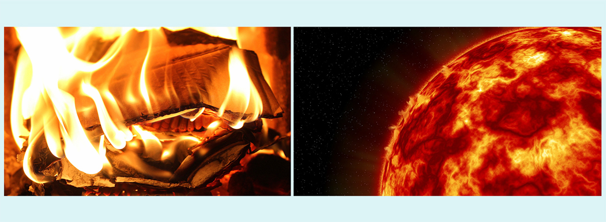

First, what is Energy *not*? The idea of energy is confusing to a lot of people. But you need to understand that energy is not a type of substance. It is related to the motion or movement of atoms, molecules, and objects.
Energy is an abstract (mathematical) measure related to the amount of motion of objects (including atoms and molecules). Energy related to motion is called "kinetic energy." Energy is also an abstract (mathematical) measure of the potential for more motion. Energy related to the potential for motion is called "potential energy."
For example, the abstract (mathematical) way to measure an object's kinetic energy is:
So, you can see from this equation that kinetic energy is a measure of the object's motion: speed (as well as its mass).
What are Energy Sources? An energy source is something that has the ability to change the motion of objects, including molecules, atoms, and even electrons and protons.
Sources and forms of energy:
Sources of energy at molecular/atomic level. Now, let's look at sources and forms of energy that can change the motion of atoms and molecules (rather than an object as a whole).
Sources of energy at subatomic level. Finally, some sources of energy can change the motion of even sub-atomic particles (such as electrons and protons).


***Note for Teachers: You can access more information about this website and find other resources for science inquiry on the ISP Tutor website.
©2021 Klahr Lab, Carnegie Mellon University. All Rights Reserved
Carnegie Mellon University | Dept. of Psychology | 5000 Forbes Ave. | Pittsburgh, PA 15213 The TED project was funded in part by the Institute of Education Science (IES), Grant R305H060034, and in part by the National Science Foundation, Grant SBE035442. The ISP Tutor project is funded by IES, Grant R305A170176.
The research reported here was supported by the Institute of Education Sciences, U.S. Department of Education, through Grant R305A170176 to Carnegie Mellon University. The opinions expressed are those of the authors and do not represent views of the Institute or the U.S. Department of Education.